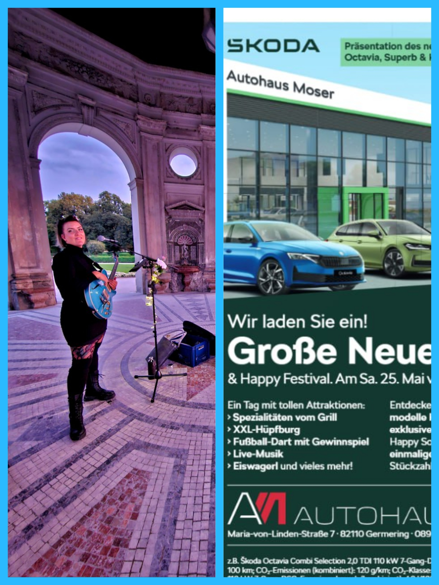

2026
Valentinstagsdinner – Pizzeria Pizza Sportivo Seefeld

Liebe geht durch den Magen 🍕 Ein romantischer Valentinsabend mit Live-Musik von Jaz Sings – jetzt reservieren und vorbeikommen, lauschen und genießen!
2025
Jaz Sings im Waldheim Gräfelfing

2025
Jaz Sings im Dianatempel

2025
Happy Festival – Neueröffnung Autohaus Moser

2025
Jaz Sings bei „Jattle, BAM + Poetry"

Das gefeierte Wiener Format kommt erstmals nach München: Zwei mixed-abled Teams improvisieren mit Tanz, Musik & Poesie – miteinander, gegeneinander und im Dialog mit dem Publikum. Ein Abend voller Spontanität und Entdeckungsfreude: DanceAbility, Live-Musik und gesprochene Poesie verschmelzen zu einer unvergesslichen Performance. Jaz Sings ist als Musikerin dabei – gemeinsam mit Micaela Czisch, Valdir Ferreira Mendes und Illia Synev (ZIRKEL e.V.).
Eintritt frei – Spenden willkommen!
Eintritt frei – Spenden willkommen!
2024 / 2025
Jaz Sings auf dem Sendlinger Weihnachtsmarkt

Gefühlvoller Popjazz für alle Fans einer besinnlichen Weihnachtszeit! Lasst Euch verzaubern 🤩
2024
Jaz Sings beim Bardentreffen Nürnberg

Drei Tage wunderbarste Musik auf NEUN verschiedenen Bühnen – quer durch die träumerische Altstadt Nürnbergs. Alles umsonst! Jaz Sings mit tiefer Wärme und Empfindsamkeit für all unsere menschlichen Gefühle. Mit puristisch klaren Gitarrentönen und einer gefühlvollen Stimme lädt Jaz uns ein, den verschlungenen Wegen des Lebens zu folgen. Ich freue mich auf Euch!
2024
Jaz Sings beim Isarinselfest

Jaz Sings mit tiefer Wärme und Empfindsamkeit für all unsere menschlichen Gefühle, Bedürfnisse und Herausforderungen. Mit puristisch klaren Gitarrentönen und einer gefühlvollen Stimme lädt Jaz uns ein, den verschlungenen Wegen des Lebens zu folgen. Ein Genuss für alle, die sich gerne zum Träumen verführen lassen.
2024
Jaz Sings in der KunstOase

Komm vorbei zum Hofkonzert und zum Bestaunen der 320 qm Antiquitäten und Erstöbern der Schmuckstückchen. In dem wahrscheinlich schönsten Antiquitätenladen in München – die Decke besteht nur aus einem Lampenteppich und alte Gemälde brechen sich in tausenden Spiegeln. Eigentlich sollte die KunstOase Eintritt verlangen, denn das ist langsam schon ein Museum!
2023
Jaz Sings in Diana Tempel

Catch me this Saturday in Munich Hofgarten!
2023
Jaz Sings beim Bardentreffen Nürnberg

DAS BARDENTREFFEN – 3 Tage Musik auf 9 Hauptbühnen und unzähligen Straßenkünstlern. Das größte Musikfestival Deutschlands bei freiem Eintritt! Schlendert durch die romantische Altstadt und lasst Euch von den mehrfach ausgezeichneten Musikern berauschen. See you there!
2023
Kunst-Auktion – Gemeinwohlwohnen e.V.

Liebe Freund*innen von Gemeinwohlwohnen – hiermit laden wir dich herzlich zu unserer Kunst-Auktion ein! Bring deine Kunst und versteigere sie gemeinsam mit uns für einen guten Zweck. Für Verpflegung und Live-Musik von Jaz ist gesorgt!
2023
Jaz Sings bei der Stadtteilkultur24

2023
Jaz Sings im Eine-Welt-Haus

Liebe Menschen, liebe ZIRKEL-Freundinnen und Freunde – wir laden herzlich ein! Am 5. Februar 2023 wollen wir ZUSAMMENKOMMEN und feiern im Saal des Eine-Welt-Hauses.
Programm:
15 Uhr: GUTE GEFÜHLE – Ein Clowns-Theater-Stück über den Umgang mit Gefühlen.
17 Uhr: Vorstellung ZIRKEL e.V. – Wie wir wirken und agieren.
18 Uhr: Essen – Trinken – Feiern. Mit Musik von Jaz Sings und Tresmundo.
Bis bald, Micaela Czisch, Beatrix Ehrensperger und das ZIRKEL-Team
Programm:
15 Uhr: GUTE GEFÜHLE – Ein Clowns-Theater-Stück über den Umgang mit Gefühlen.
17 Uhr: Vorstellung ZIRKEL e.V. – Wie wir wirken und agieren.
18 Uhr: Essen – Trinken – Feiern. Mit Musik von Jaz Sings und Tresmundo.
Bis bald, Micaela Czisch, Beatrix Ehrensperger und das ZIRKEL-Team
2022
Jaz Sings im Luitpoldpark

Jaz Sings & Linda's Melodies – Musik für Träumer und Geniesserinnen. Sonntags-ZIRKEL im Luitpoldpark vom Verein ZIRKEL für kulturelle Bildung e.V.
2022
Jaz Sings in Deisenhofen

2022
Jaz Sings auf der Mäzionäre Vernissage

Ich freue mich über die Einladung, die Vernissage von Mäzionäre musikalisch zu begleiten. Kommt vorbei am Freitag den 25. März 2022 ab 18:00 Uhr und feiert mit uns den Frühlingsanfang! Die Idee ist eine Kooperation der Künstlerin Christine Steiner und der Boutique Viva Maria von Laura Bonazzi. I'm very happy to accompany this event with my music. Hope to see you there – Love, Jaz 🌿
2021
Joy Green Voices Award 2021

Yeah – ich habe den dritten Platz bei den Joy GREEN VOICES AWARD 2021 belegt! Ich war die einzige die mit Instrument auftrat, daher hatte ich einen Nachteil da ich mich nicht so bewegen konnte. Auch stimmlich musste ich etwas Konzentration an die Gitarre abgeben. Dafür hatte ich das schönste Outfit 😜 Danke dass ich dabei sein durfte! Es hat viel Spaß gemacht und die Band war super!